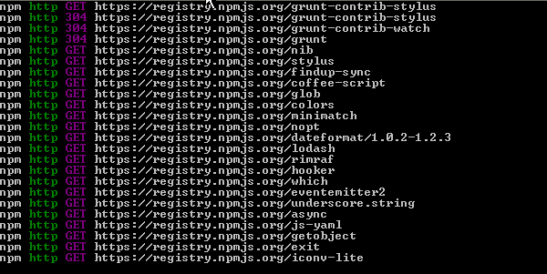
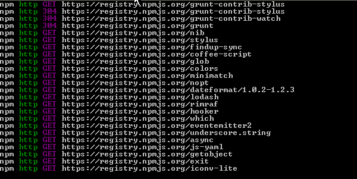

|
|
|---|
 

Introduccion a la seguridad infomatica |
|||||
|---|---|---|---|---|---|
Se entiende por seguridad informática al conjunto de normas, procedimientos y herramientas, que tienen como objetivo garantizar la disponibilidad, integridad, confidencialidad y buen uso de la información que reside en un sistema de información. Cada día más y más personas mal intencionadas intentan tener acceso a los datos de nuestros ordenadores. El acceso no autorizado a una red informática o a los equipos que en ella se encuentran pueden ocasionar en la gran mayoría de los casos graves problemas. Uno de las posibles consecuencias de una intrusión es la pérdida de datos. Es un hecho frecuente y ocasiona muchos trastornos, sobre todo si no estamos al día de las copias de seguridad. Y aunque estemos al día, no siempre es posible recuperar la totalidad de los datos. Otro de los problemas más dañinos es el robo de información sensible y confidencial. La divulgación de la información que posee una empresa sobre sus clientes puede acarrear demandas millonarias contra esta, o un ejemplo más cercano a usted es el de nuestras contraseñas de las cuentas de correo por las que intercambiamos información con otros. Con la constante evolución de las computadoras es fundamental saber que recursos necesitar para obtener seguridad en los sistemas de información. En el presente informe hablaremos sobre la importancia de seguridad informática, haremos referencias sobre a las formas que existen para proteger los sistemas informáticos y la información que contienen sobre accesos no autorizados, daños, modificaciones o destrucciones OBJETIVOS • El presente informe tiene como objetivo comprender los conceptos básicos de seguridad informática • Describir los principales problemas de seguridad informática con los que se enfrentas los usuarios de computadoras. • Conocer los conceptos de Integridad, confiabilidad y disponibilidad de la información. • Conocer los factores de riegos • Conocer los mecanismos de seguridad informática existentes. • Concientizar sobre los riesgos a los que las organizaciones y usuarios de computadoras se enfrentan en materia de seguridad de la información • Y por último ampliar o enriquecer los conocimientos acerca de la seguridad informática.
|
|||||